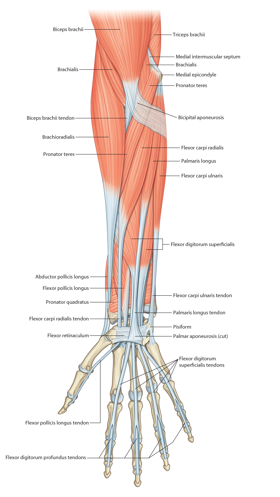
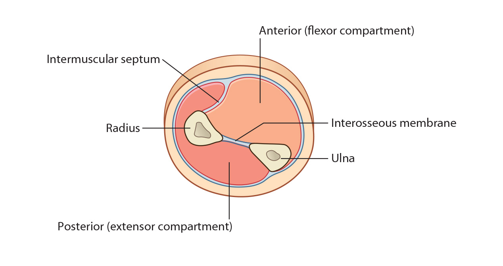

Lab3 - Module 2 - Anatomy of the Arm and Forearm: Page 5 of 11
Muscles of the Flexor Forearm
|  |
| Tap on image to enlarge |
|  |
| Tap on image to enlarge |
| The flexor pronator group arises by a common flexor tendon from the medial epicondyle. This is called the common flexor origin. The deeper flexors originate from the anterior aspects of the bodies of the ulna and radius. |
|
• All flexors - are located on the anterior surface of the wrist and most are held in place by the flexor retinaculum. • The eight muscles of the anterior aspect of the forearm are flexors - can be considered in three functional groups: muscles that rotate the radius on the ulna (pronator teres and pronator quadratus); muscles that flex the hand at the wrist joint (flexor carpi radialis, palmaris longus, flexor carpi ulnaris); muscles that flex the digits (flexor digitorum superficialis, flexor digitorum profundus, flexor pollicis, longus). • The anterior forearm muscles - can be divided into three layers: a superficial layer (pronator teres, flexor carpi radialis, palmaris longus, and flexor carpi ulnaris – this is the flexor pronator group that arises from a common tendon attached to the medial epicondyle of the humerus); an intermediate layer (flexor digitorum superficialis); and a deep layer (flexor digitrum profundus, flexor pollicis longus, pronator quadratus). |
| Deep group: |
| Add the Pronator Quadratus muscle. |
|
Origin - Distal 1/4th of the anterior surface of the ulna Insertion - Distal 1/4th of the anterior surface of the radius Innervation - Anterior Interosseous Nerve from Median Nerve Action - Pronates the hand |
| Add the Flexor Pollicus Longus muscle has two heads of origin; Radial Head and Humeral Head. |
|
Origin - Anterior surface of the radius; it also arises from the interosseous membrane. Insertion - Base of the distal phalanx of the thumb Innervation - Anterior Interosseous Nerve from Median Nerve Action - Flexion of the distal phalanx of the thumb and aids in thumb flexion |
| Add the Flexor Digitorum Profundus muscle. |
|
Origin - Proximal 3/4ths of the anterior and medial aspects of the ulna and the ulnar half of the interosseous membrane Insertion - Four long tendons at the base of the distal phalanx’s of the 4 medial fingers Innervation - Lateral Part from Anterior Interosseous Nerve form Median Nerve and Medial Part from Ulnar Nerve Action - Finger flexion at the distal interphalangeal joints, also aids in hand flexion at the wrist |